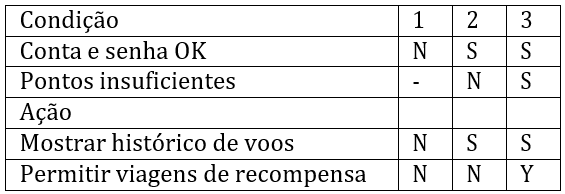
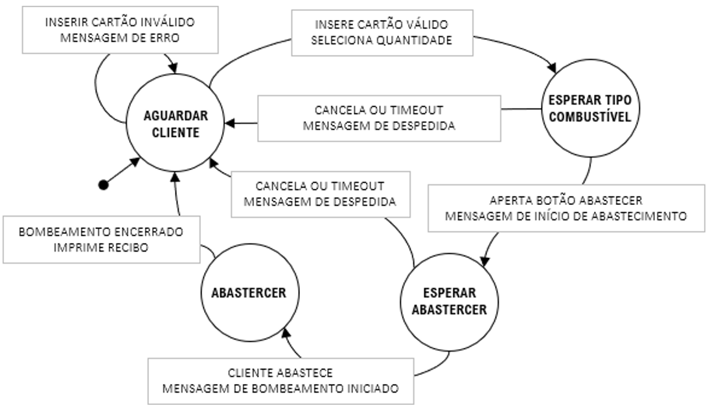
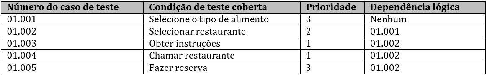

Questão 1
O que é qualidade?
|
|
A) |
Atividades focadas em proporcionar confiança de que os
requisitos de qualidade serão cumpridos |
|
B) |
O grau em que um componente ou sistema satisfaz as
necessidades declaradas e implícitas de suas diversas partes
interessadas |
|
C) |
O grau em que um componente ou sistema protege informações
e dados para que as pessoas ou outros componentes ou
sistemas tenham o grau de acesso adequado a seus tipos e
níveis de autorização |
|
D) |
Os custos totais incorridos em atividades e questões de
qualidade e frequentemente divididos em custos de prevenção,
custos de avaliação, custos de falhas internas e custos de
falhas externas
|
|
Questão 2
Qual dos seguintes é um objetivo típico do teste?
|
|
A) |
Prevenir defeitos |
|
B) |
Reparação de defeitos |
| |
C) |
Comparação dos resultados reais com os resultados
esperados |
| |
D) |
Analisando a causa do fracasso |
|
Questão 3
Um telefone tocando momentaneamente distrai um
programador, fazendo com que o programador programe
inadequadamente a lógica que verifica o limite superior de
uma variável de entrada. Mais tarde, durante os testes do
sistema, um testador percebe que este campo de entrada
aceita valores de entrada inválidos. A lógica codificada
impropriamente para a verificação do limite superior é:
|
|
A) |
A causa raiz |
|
B) |
O fracasso |
|
C) |
O erro |
|
D) |
O defeito |
|
Questão 4
Um proprietário de produto diz que seu papel como
testador em uma equipe Ágil é pegar todos os bugs antes do
final de cada iteração. Qual dos seguintes é um princípio
de teste que poderia ser usado para responder a esta falsa
afirmação?
|
|
A) |
Agrupamento de defeitos |
|
B) |
Os testes mostram a presença de defeitos |
|
C) |
Ausência de erros de falácia |
|
D) |
Análise da causa raiz |
|
Questão 5
Os programadores frequentemente escrevem e executam
testes unitários contra o código que eles escreveram.
Durante esta atividade de autoteste, qual dos seguintes
aspectos é uma mentalidade de testador que os
programadores devem adotar para realizar estes testes
unitários de forma eficaz?
|
|
A) |
Boa habilidade de comunicação |
|
B) |
Cobertura de código |
|
C) |
Avaliação de defeitos de código |
|
D) |
Atenção aos detalhes |
|
Questão 6
Considere as seguintes atividades de teste:
(1) Seleção de testes de regressão
(2) Avaliando a completude da execução do teste
(3) Identificar quais histórias de usuários têm
relatórios de defeitos em aberto
(4) Avaliar se o número de testes para cada exigência é
consistente com o nível de risco do produto
Considere as seguintes maneiras como a rastreabilidade
pode ajudar nos testes:
(a) Melhorar a compreensibilidade dos relatórios de
status dos testes para incluir o status dos itens de base
do teste
(b) Tornar os testes auditáveis
(c) Fornecer informações para avaliar a qualidade do
processo
(d) Analisar o impacto das mudanças
Qual dos seguintes aspectos combina a atividade de teste
com a forma como a rastreabilidade pode auxiliar essa
atividade?
|
|
A) |
1d; 2; 3; 4a |
|
B) |
1; 2d; 3a; 4 |
|
C) |
1d; 2; 3a; 4 |
|
D) |
1d; 2; 3a; 4 |
|
Questão 7
Um testador participou de uma discussão sobre a estrutura
de banco de dados proposta. O testador identificou um
problema potencial de desempenho relacionado a certas
buscas comuns de usuários. Este possível problema foi
explicado para a equipe de desenvolvimento. Qual dos
seguintes aspectos é uma contribuição de teste para o
sucesso que o MELHOR corresponde a esta situação?
|
|
A) |
Permitindo que os testes requeridos sejam identificados em
um estágio inicial |
|
B) |
Assegurar que os processos sejam realizados corretamente |
|
C) |
Reduzindo o risco de defeitos fundamentais de projeto |
|
D) |
Reduzindo o risco de funcionalidade não testada |
|
Questão 8
Qual dos seguintes é um exemplo de uma tarefa que pode
ser realizada como parte do processo de teste?
|
|
A) |
Análise de um defeito |
|
B) |
Dados de teste de projeto |
|
C) |
Atribuição de uma versão a um item de teste |
|
D) |
Escrever uma história de usuário |
|
Questão 9
Você está executando um teste de desempenho com o
objetivo de encontrar possíveis gargalos de rede nas
interfaces entre os componentes de um sistema. Qual das
seguintes afirmações descreve este teste?
|
|
A) |
Um teste funcional durante o nível de teste de integração |
|
B) |
Um teste não-funcional durante o nível de teste de
integração |
|
C) |
Um teste funcional durante o nível de teste de componentes |
|
D) |
Um teste não-funcional durante o nível de teste de
componentes |
|
Questão 10
Qual das seguintes afirmações é verdadeira?
|
|
A) |
A análise de impacto é útil para os testes de confirmação
durante os testes de manutenção |
|
B) |
O teste de confirmação é útil para o teste de regressão
durante o projeto do sistema |
|
C) |
A análise de impacto é útil para testes de regressão
durante os testes de manutenção |
|
D) |
O teste de confirmação é útil para a análise de impacto
durante os testes de manutenção |
|
Questão 11
Considere os seguintes tipos de defeitos nos quais um
nível de teste pode se concentrar:
(1) Defeitos em módulos ou objetos testáveis
separadamente
(2) Não focado na identificação de defeitos
(3) Defeitos nas interfaces e interações
(4) Defeitos em todo o objeto de teste
Qual da lista a seguir corresponde corretamente aos
níveis de teste do programa da Fundação com as opções de
foco de defeitos dadas acima?
|
|
A) |
1 = teste de desempenho; 2 = teste de componentes; 3 =
teste de sistema; 4 = teste de aceite |
|
B) |
1 = teste de componentes; 2 = teste de aceite; 3 = teste
de sistema; 4 = teste de integração |
|
C) |
1 = teste de componentes; 2 = teste de aceite; 3 = teste
de integração; 4 = teste de sistema |
|
D) |
teste de integração; 2 = teste do sistema; 3 = teste de
componentes; 4 = teste de aceite |
|
Questão 12
Um produto de software de sistema operacional de mercado
de massa é projetado para rodar em qualquer hardware de PC
com um processador da família x86. Você está executando um
conjunto de testes para procurar defeitos relacionados ao
suporte dos vários PCs que usam tal processador e para
criar confiança de que marcas importantes de PCs
funcionarão. Que tipo de teste você está realizando?
|
|
A) |
Teste de desempenho |
|
B) |
Teste do processador |
|
C) |
Teste funcional |
|
D) |
Teste de portabilidade |
|
Questão 13
Durante um esforço de desenvolvimento ágil, um
proprietário de produto descobre uma exigência regulatória
desconhecida anteriormente que se aplica à maioria das
histórias de usuários dentro de um determinado épico. As
histórias de usuários são atualizadas para proporcionar as
mudanças necessárias no comportamento do software. Os
programadores da equipe estão modificando o código de
forma apropriada. Como um testador da equipe, que tipos de
testes serão executados?
|
|
A) |
Testes de confirmação |
|
B) |
Testes de regressão |
|
C) |
Testes funcionais |
|
D) |
Testes relacionados a mudanças |
|
Questão 14
Em uma revisão formal, qual é o nome do papel do
participante que dirige uma reunião de inspeção?
|
|
A) |
Facilitador |
|
B) |
Programador |
|
C) |
Autor |
|
D) |
Gerente de projetos |
|
Questão 15
Você está lendo uma história de usuário no acúmulo de
produtos para se preparar para uma reunião com o
proprietário do produto e um desenvolvedor, notando
defeitos potenciais à medida que você vai. Qual das
seguintes afirmações é verdadeira sobre esta atividade?
|
|
A) |
Não é um teste estático, porque o teste estático envolve a
execução do objeto de teste |
|
B) |
Não é um teste estático, pois os testes estáticos são
sempre realizados com uma ferramenta |
|
C) |
É um teste estático, pois qualquer defeito encontrado pode
ser encontrado mais barato durante os testes dinâmicos |
|
D) |
É um teste estático, porque o teste estático não envolve a
execução do objeto de teste |
|
Questão 16
Durante um período intensivo de horas extras do projeto,
um documento de arquitetura de sistema é enviado a vários
participantes do projeto, anunciando uma revisão técnica
previamente não planejada para ocorrer em uma semana. Não
são feitos ajustes na lista de tarefas atribuídas aos
participantes. Com base apenas nestas informações, qual
dos seguintes fatores é um fator de sucesso para a revisão
que é AUSENTE?
|
| |
A) |
Tipo de revisão apropriada |
| |
B) |
Tempo adequado para a preparação |
|
C) |
Métricas suficientes para avaliar o autor |
|
D) |
Reunião de revisão bem gerenciada |
|
Questão 17
Você está trabalhando como um testador em uma equipe Ágil
e participou de mais de duas dúzias de sessões de
refinamento da história do usuário com o proprietário do
produto e os desenvolvedores da equipe no início de cada
iteração. Como as revisões se tornaram mais eficazes na
detecção de defeitos nas histórias de usuários e o
proprietário do produto mais apto a corrigir esses
defeitos, você e a equipe notam que a velocidade da
equipe, como mostrado em seus gráficos queimados, começou
a aumentar. Qual dos seguintes é um benefício dos testes
estáticos que DIRETAMENTE se aplica ao aumento da
velocidade?
|
| |
A) |
Aumento do custo total da qualidade |
| |
B) |
Redução do custo dos testes |
|
C) |
Aumentar a produtividade do desenvolvimento |
|
D) |
Reduzir o custo total da qualidade |
|
Questão 18
Você está trabalhando em um projeto de desenvolvimento de
videogame, usando métodos ágeis. Ele é baseado na
mitologia grega e na história, e os jogadores podem
desempenhar papéis-chave em cenários como as batalhas
entre gregos e troianos. Considere a seguinte história de
usuário e seus critérios de aceite associados:
Como um jogador, quero ser capaz de adquirir a Vara de
Midas (um novo objeto mágico), para que eu possa
transformar objetos e outros jogadores em ouro
(1) A Vara deve funcionar em qualquer objeto ou
jogador, não importa o tamanho, funciona pelo simples
toque.
(2) Segurar o bastão não transforma o jogador que o
segura em ouro
(3) Qualquer objeto ou jogador tocado pelo bastão se
transforma completamente em ouro dentro de um
milissegundo.
(4) A Vara aparece como mostrado no Protótipo O.W.RoM
(5) A transformação começa no ponto de contato com a
Vara e se move a uma taxa de um metro por milissegundo.
Você está participando de uma sessão de revisão baseada
em checklist desta história de usuário. Esta história de
usuário e seus critérios de aceite associados contêm quais
dos seguintes defeitos típicos identificados por testes
estáticos neste tipo de produto de trabalho?
|
| |
A) |
Desvio das normas |
| |
B) |
Contradição |
| |
C) |
Vulnerabilidade de segurança |
|
D) |
Lacunas de cobertura |
|
Questão 19
O que é cobertura de decisão?
|
| |
A) |
A cobertura dos resultados das condições |
| |
B) |
Cobertura de decisões é sinônimo de cobertura de
declarações |
| |
C) |
A cobertura das declarações executáveis |
|
D) |
A cobertura dos resultados das decisões |
|
Questão 20
Antes de uma sessão de planejamento de iteração, você
está estudando uma história de usuário e seus critérios de
aceite, derivando as condições de teste e casos de teste
associados da história do usuário como uma forma de
aplicar o princípio de qualidade e teste antecipados. Que
técnica de teste você está aplicando?
|
| |
A) |
Caixa-branca |
| |
B) |
Caixa-preta |
| |
C) |
Baseado na experiência |
|
D) |
Suposição de erros |
|
Questão 21
Qual dos seguintes aspectos é uma afirmação verdadeira
sobre testes exploratórios?
|
| |
A) |
Testadores mais experientes que testaram aplicações e
tecnologias similares provavelmente farão melhor do que
testadores menos experientes em testes exploratórios |
| |
B) |
Os testes exploratórios não identificam nenhum teste
adicional além daqueles que resultariam de técnicas de teste
formais |
| |
C) |
O tempo necessário para completar uma sessão de testes
exploratórios não pode ser previsto com antecedência |
|
D) |
Os testes exploratórios podem envolver o uso de técnicas
caixa-preta, mas não técnicas caixa-branca |
|
Questão 22
Você está testando um aplicativo móvel que permite aos
clientes acessar e gerenciar suas contas bancárias. Você
está executando um conjunto de testes que envolve a
avaliação de cada tela e cada campo em cada tela em
relação a uma lista geral de melhores práticas de
interface com o usuário, derivada de um livro popular
sobre o tema, que maximiza a atratividade, facilidade de
uso e acessibilidade para tais aplicativos. Qual das
seguintes opções MELHOR categoriza a técnica de teste que
você está usando?
|
| |
A) |
Baseada na especificação |
| |
B) |
Exploratório |
| |
C) |
Baseado em checklist |
|
D) |
Suposição de erros |
|
Questão 23
Considere um aplicativo móvel que permita aos clientes
acessar e gerenciar suas contas bancárias. Uma história de
usuário acabou de ser adicionada ao conjunto de recursos
que verifica as contas de mídia social e os registros
bancários dos clientes para dar saudações personalizadas
em aniversários e outros marcos pessoais. Qual das
seguintes técnicas de teste um PROGRAMADOR poderia
utilizar durante um teste unitário do código para garantir
que a cobertura de situações quando as saudações são
supostas ocorrer e quando as saudações NÃO são supostas
ocorrer?
|
| |
A) |
Teste de declaração |
| |
B) |
Testes exploratórios |
| |
C) |
Testes de transição do Estado |
|
D) |
Testes de decisão |
|
Questão 24
Uma aplicação em lote está em produção inalterada há mais
de dois anos. Ele funciona durante a noite uma vez por mês
para produzir declarações que serão enviadas aos clientes
por e-mail. Para cada cliente, o aplicativo passa por cada
conta e lista todas as transações nessa conta no último
mês. Ele usa uma estrutura neste loop para processar
clientes (loop externo), as contas de cada cliente (loop
médio) e as transações de cada conta (loop interno).
Uma noite, o pedido de lote termina prematuramente,
deixando de enviar extratos por e-mail a alguns clientes,
quando encontra um cliente com uma conta para a qual não
ocorreram transações no último mês. Esta é uma situação
muito incomum e não tem ocorrido nos anos desde que este
aplicativo foi colocado em produção.
Enquanto conserta o defeito, um programador pede que você
recomende técnicas de teste que sejam eficazes contra este
tipo de defeito. Qual das seguintes técnicas de teste
provavelmente teria sido capaz de detectar o defeito
subjacente?
|
| |
A) |
Teste de decisão |
| |
B) |
Teste de declaração |
| |
C) |
Testes baseados em listas de verificação |
|
D) |
Suposição de erros |
|
Questão 25
Você está testando uma bomba de gasolina desacompanhada
que só aceita cartões de crédito. Uma vez validado o
cartão de crédito, o bico da bomba colocado no tanque e a
nota desejada selecionada, o cliente digita a quantidade
desejada de combustível em galões usando o teclado. O
teclado permite apenas a entrada de dígitos. O combustível
é vendido em décimos (0,1) de um galão, até 50,0 galões.
Qual dos seguintes é um conjunto mínimo de quantidades
desejadas que cobre as partições de equivalência para esta
entrada?
|
| |
A) |
0.0, 20.0, 60.0 |
| |
B) |
0.0, 0.1, 50.0 |
| |
C) |
0.0, 0.1, 50.0, 70.0 |
|
D) |
-0.1, 0.0, 0.1, 49.9, 50.0, 50.1 |
|
Questão 26
Você está testando um sistema de comércio eletrônico que
vende suprimentos de cozinha como especiarias, farinha e
outros itens a granel. As unidades em que os itens são
vendidos são gramas (para especiarias e outros itens
caros) ou quilogramas (para farinha e outros itens
baratos). Independentemente das unidades, a menor
quantidade válida de pedido é de 0,5 unidades (p. ex.,
meia grama de casulos de cardamomo) e a maior quantidade
válida de pedido é de 25,0 unidades (p. ex., 25 quilos de
açúcar). A precisão do campo de unidades é de 0,1
unidades.
Qual dos seguintes é um conjunto de valores de entrada
que cobrem os valores limite com valores limite de dois
pontos para este campo?
|
| |
A) |
0.3, 10.0, 28.0 |
| |
B) |
0.4, 0.5, 0.6, 24,9,25,0, 25.1 |
| |
C) |
0.4, 0.5, 25.0 25.1 |
|
D) |
0.5, 0.6, 24.9, 25.0 |
|
Questão 27
Considere a seguinte tabela de decisão para a parte de um
sistema de reservas de companhias aéreas online que
permite aos passageiros frequentes resgatar pontos para
viagens de recompensa:

Suponha que haja duas partições de equivalência para a
condição em que a conta/senha ok não é verdadeira, uma
onde a conta é inválida e outra onde a conta é válida, mas
a senha é inválida. Suponha que haja apenas uma partição
de equivalência correspondente à condição em que
Conta/senha ok é verdadeira, onde tanto a conta quanto a
senha são válidas.
Se você quiser projetar testes para cobrir as partições
de equivalência para Conta/senha ok e para esta parte da
tabela de decisão, qual é o número mínimo de testes
necessários?
|
| |
A) |
2 |
| |
B) |
3 |
| |
C) |
4 |
|
D) |
9 |
|
Questão 28
Considere o seguinte diagrama de transição de estado
apenas para uma bomba de gasolina sem supervisão, com
cartão de crédito:

Suponha que você queira desenvolver o número mínimo de
testes para cobrir cada transição no diagrama de transição
de estado. Suponha ainda que cada teste deve começar no
estado inicial, esperando pelo cliente, e cada teste
termina quando uma transição chega ao estado inicial.
Quantos testes você precisa?
|
| |
A) |
4 |
| |
B) |
7 |
| |
C) |
1 |
|
D) |
Infinito |
|
Questão 29
Você está testando um sistema de comércio eletrônico que
vende suprimentos de cozinha como especiarias, farinha e
outros itens a granel. As unidades em que os itens são
vendidos são gramas (para especiarias e outros itens
caros) ou quilogramas (para farinha e outros itens
baratos). Independentemente das unidades, a menor
quantidade válida de pedido é de 0,5 unidades (p. ex.,
meia grama de casulos de cardamomo) e a maior quantidade
válida de pedido é de 25,0 unidades (p. ex., 25 quilos de
açúcar). A precisão do campo das unidades é de 0,1
unidades.
Qual dos seguintes é um conjunto MÍNIMO de valores de
entrada que cobre as partições de equivalência para este
campo?
|
| |
A) |
10.0, 28.0 |
| |
B) |
0.4, 0.5, 25.0, 25.1 |
| |
C) |
0.2, 0.9, 29.5 |
|
D) |
12.3 |
|
Questão 30
Você está trabalhando como um testador em um sistema
bancário online. A disponibilidade é considerada um dos
principais riscos (qualidade) para o sistema. Você
encontra uma falha reprodutível que resulta em clientes
que perdem suas conexões com o site do banco na Web ao
transferir fundos entre tipos comuns de contas e não
conseguem se reconectar por entre três e cinco minutos.
Qual dos seguintes aspectos seria um bom resumo para um
relatório de defeitos para esta falha, um que capte tanto
a essência da falha quanto seu impacto sobre as partes
interessadas?
|
| |
A) |
Os logs do servidor Web mostram erro 0x44AB27 ao executar
o teste 07.005, que não é uma mensagem de erro esperada no
sistema de arquivos /tmp |
| |
B) |
Os desenvolvedores introduziram um grande defeito de
disponibilidade que irá perturbar seriamente nossos clientes
|
| |
C) |
O desempenho é lento e confiável sob carga |
|
D) |
A típica transação de transferência de fundos resulta no
término da sessão do cliente, com um atraso na
disponibilidade quando se tenta reconectar |
|
Questão 31
Você está testando um aplicativo móvel que permite aos
usuários encontrar um restaurante próximo, com base no
tipo de comida que eles querem comer. Considere a seguinte
lista de casos de teste, prioridades (menor número é alta
prioridade), e dependências, no seguinte formato:

Qual dos seguintes é um possível cronograma de execução
de testes que considera tanto as prioridades quanto as
dependências?
|
| |
A) |
01.001, 01.002, 01.003, 01.005, 01.004 |
| |
B) |
01.001, 01.002, 01.004, 01.003, 01.005 |
| |
C) |
01.003, 01.004, 01.002, 01.001, 01.002 |
|
D) |
01.001, 01.002, 01.004, 01.005, 01.003 |
|
Questão 32
Qual dos seguintes é uma métrica de teste comum
frequentemente usada para monitorar a preparação e
execução do teste BOTH?
|
| |
A) |
Status do caso de teste |
| |
B) |
Taxas de localização/correção de defeitos |
| |
C) |
Preparação do ambiente de teste |
|
D) |
Custo estimado para encontrar o próximo defeito |
|
Questão 33
Quais dos dois fatores a seguir podem ser usados para
determinar o nível de risco?
|
| |
A) |
Testes e desenvolvimento |
| |
B) |
Dinâmico e reativo |
| |
C) |
Declaração e decisão |
|
D) |
Probabilidade e impacto |
|
Questão 34
Você está trabalhando como gerente de projeto em um
projeto de software bancário interno. Para evitar
retrabalho e ciclos excessivos de
encontrar/corrigir/retestar, o seguinte processo foi
colocado em prática para resolver um defeito, uma vez
encontrado no laboratório de testes:
(a) O desenvolvedor designado encontra e conserta o
defeito, depois cria uma construção experimental
(b) Um desenvolvedor de um par revisa, testa e confirma a
correção do defeito em sua área de trabalho
(c) Um testador, geralmente o que encontrou o defeito,
testa a confirmação da correção do defeito no ambiente de
desenvolvimento
(d) Uma vez por dia, um novo lançamento com todas as
correções de defeitos confirmadas é instalado no ambiente
de teste
(e) O mesmo testador da etapa 3 de confirmação testa a
correção do defeito no ambiente de teste
No entanto, um elevado número de defeitos que os
testadores confirmaram como corrigidos no ambiente de
desenvolvimento (na etapa 3) são de alguma forma
reprovados nos testes de confirmação no ambiente de teste,
com os resultados do retrabalho e do tempo de ciclo
resultantes. Você tem a maior confiança em seus
testadores, e descartou erros ou omissões na etapa 3.
Qual dos seguintes aspectos é a parte mais provável do
processo a ser verificada a seguir?
|
| |
A) |
A atividade dos desenvolvedores, que podem não estar
testando adequadamente na etapa 2 |
| |
B) |
A atividade dos testadores, que podem estar confusos sobre
o que testar no passo 5 |
| |
C) |
Gerenciamento da configuração, que pode não estar mantendo
a integridade do produto na etapa 4 |
|
D) |
A atividade dos desenvolvedores, que podem não estar
corrigindo defeitos corretamente na etapa 1 |
|
Questão 35
Você está empenhado em planejar um esforço de teste para
uma nova aplicação bancária móvel. Como parte da
estimativa, você se encontra primeiro com os testadores
propostos e outros sobre o projeto. A equipe está bem
coordenada e já trabalhou em projetos similares. Para
verificar a estimativa resultante, você então se refere a
algumas médias do setor para esforço de teste e custos em
projetos similares, publicadas por um consultor de renome.
Qual declaração descreve com exatidão sua abordagem de
estimativa?
|
| |
A) |
Uma abordagem simultânea baseada em especialistas e em
métricas |
| |
B) |
Principalmente uma abordagem baseada em especialistas,
complementada com uma baseada em métricas |
| |
C) |
Principalmente uma abordagem baseada em métricas,
complementada com uma baseada em especialistas |
|
D) |
Primeiramente o planning poker, verificado por
velocidade a partir de gráficos burndown |
|
Questão 36
Durante um projeto seguindo métodos ágeis, você encontra
uma discrepância entre a interpretação do desenvolvedor de
um critério de aceite e a interpretação do proprietário do
produto, que você traz à tona durante uma sessão de
refinamento da história do usuário. Qual dos seguintes
aspectos é um benefício de independência de teste
exemplificado por esta situação?
|
| |
A) |
Reconhecimento de diferentes tipos de falhas |
| |
B) |
Assumir a responsabilidade primária pela qualidade |
| |
C) |
Remoção precoce de um defeito |
|
D) |
Desafiar as suposições das partes interessadas |
|
Questão 37
Você está definindo o processo para realizar a análise de
risco do produto como parte de cada iteração em um projeto
Ágil. Qual dos seguintes é o lugar apropriado para
documentar este processo em um plano de teste?
|
| |
A) |
Escopo dos testes |
| |
B) |
Abordagem de testes |
| |
C) |
Métricas de testes |
|
D) |
Gerenciamento da configuração do objeto de teste |
|
Questão 38
Considere a seguinte lista de resultados indesejáveis que
poderiam ocorrer em um esforço de desenvolvimento de
aplicativos móveis:
(a) Totais incorretos nos relatórios
(b) Mudança nos critérios de aceite durante os testes de
aceite
(c) Os usuários acham o teclado macio muito difícil de
usar com seu aplicativo
(d) O sistema responde muito lentamente à entrada do
usuário durante a entrada da cadeia de busca
(e) Testadores não autorizados a relatar resultados de
testes em reuniões diárias
Qual dos seguintes aspectos classifica adequadamente
estes resultados como riscos de projeto e de produto?
|
| |
A) |
Riscos do produto: B, E; Riscos de projeto: A, C, D |
| |
B) |
Riscos do produto: A, C, D; Riscos do projeto: B, E |
| |
C) |
Riscos do produto: A, C, D, E Riscos do projeto: B |
|
D) |
Riscos do produto: A, C Riscos do projeto: B, D, E |
|
Questão 39
Você acaba de concluir um projeto piloto para uma
ferramenta de teste de regressão. Você entende muito
melhor a ferramenta e adaptou seu processo de teste a ela.
Você padronizou uma abordagem para usar a ferramenta e
seus produtos de trabalho associados. Qual dos seguintes
objetivos é um projeto piloto típico de automação de
testes que ainda deve ser realizado?
|
| |
A) |
Saiba mais detalhes sobre a ferramenta |
| |
B) |
Veja como a ferramenta se ajustaria aos processos e
práticas existentes |
| |
C) |
Decidir sobre formas padrão de usar, gerenciar, armazenar
e manter a ferramenta e os ativos de teste |
|
D) |
Avaliar se os benefícios serão alcançados a um custo
razoável |
|
Questão 40
Qual das seguintes ferramentas é mais útil para relatar
as métricas de teste?
|
| |
A) |
Ferramenta de gerenciamento de testes |
| |
B) |
Ferramenta de análise estática |
| |
C) |
Ferramenta de cobertura |
|
D) |
Ferramentas de teste baseadas em modelos |